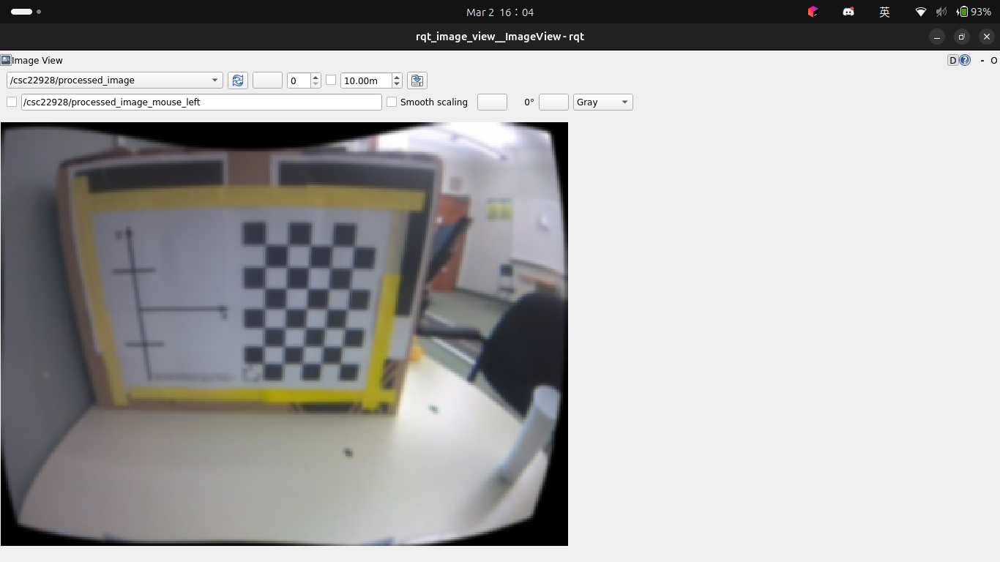
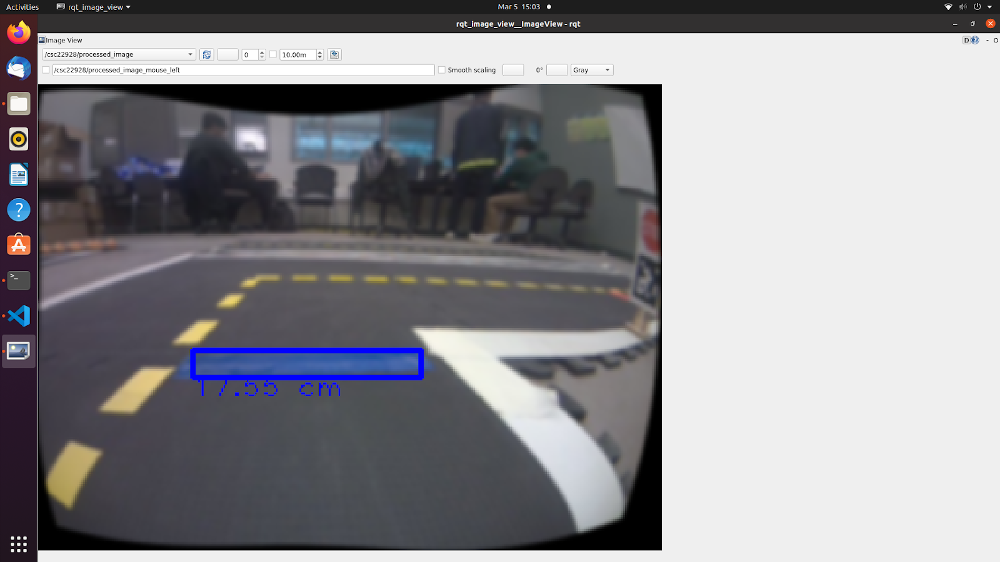
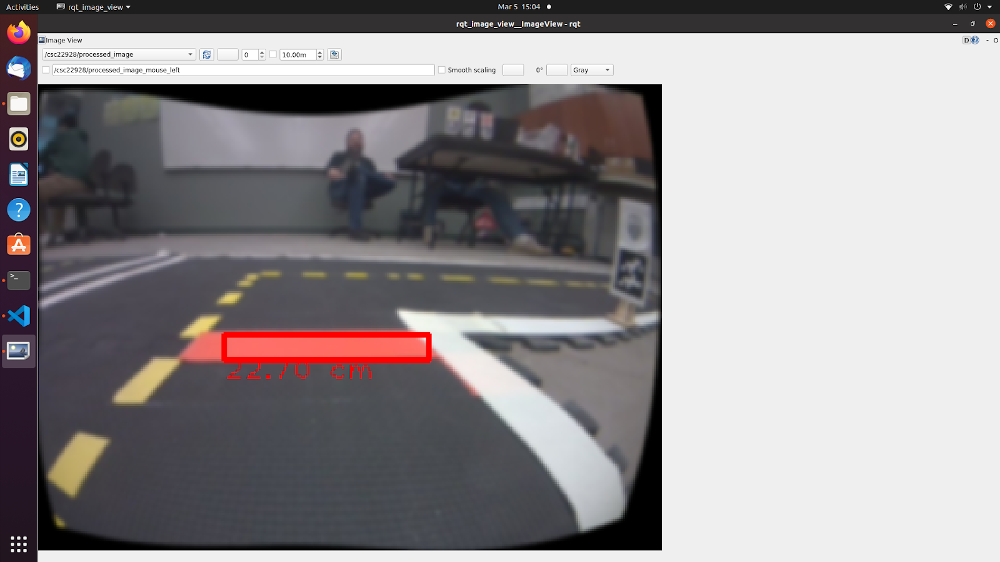
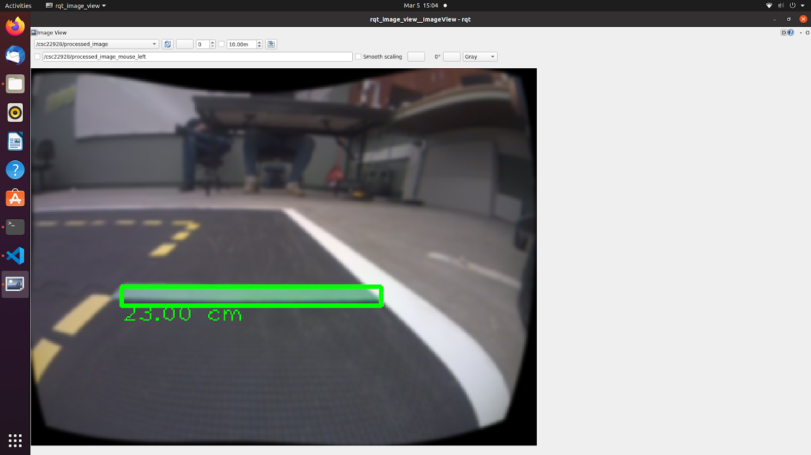
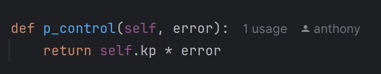
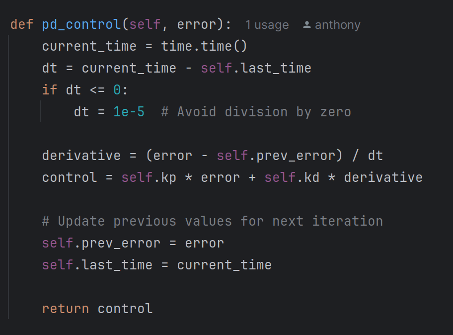
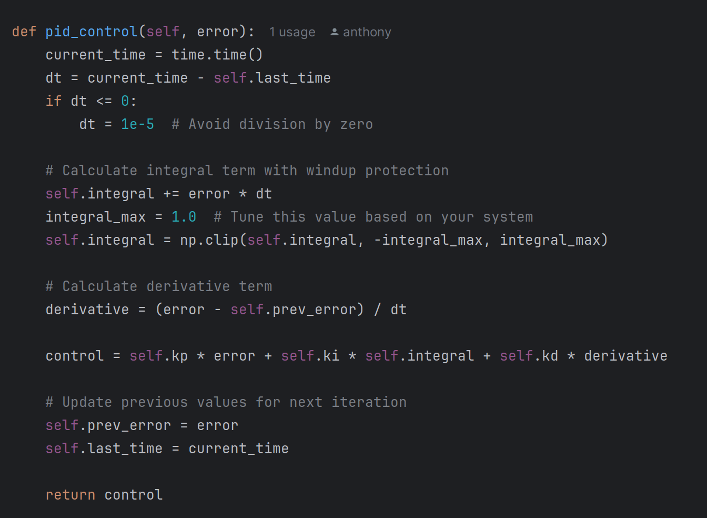
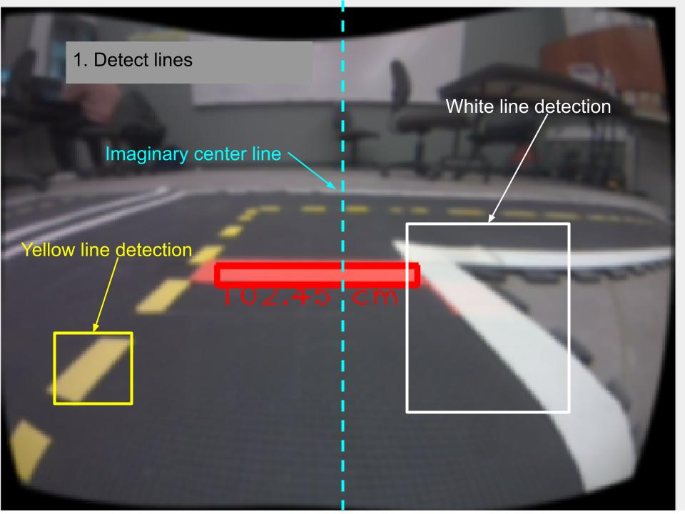
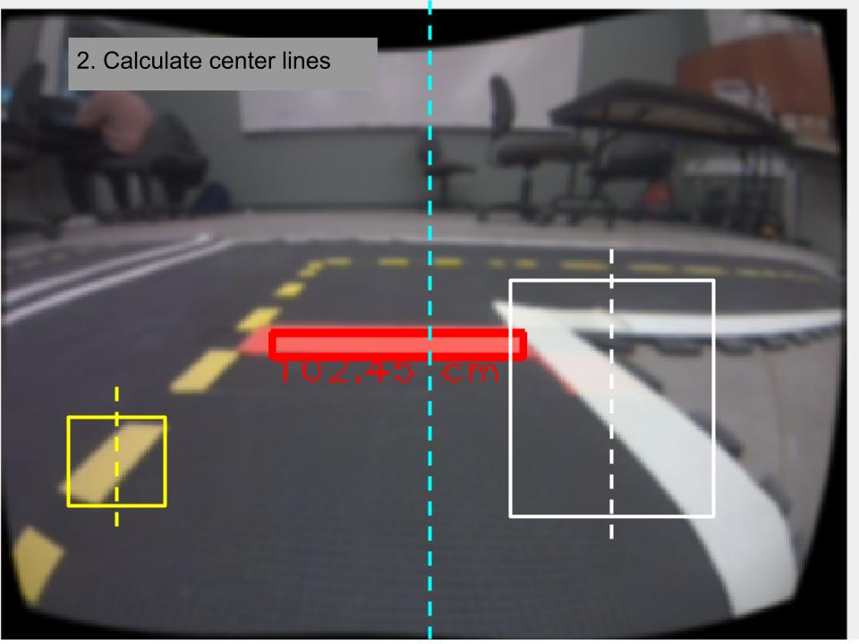
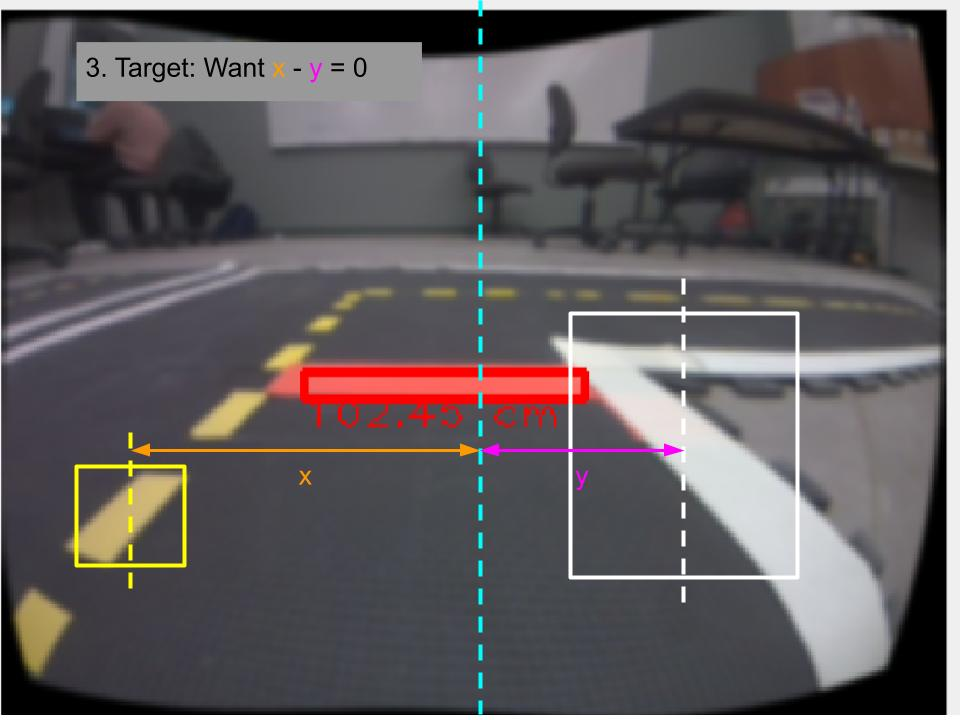

This image was captured using our Duckiebot's camera. It is distorted, as shown by the curved lines and edges on the calibration board. We should not perform vision-based operations using distorted images because they do not accurately reflect the real world. In this case, (trust me) the lines and edges on the calibration board are straight.
Undistorted Image

This is the same image as the one on the left, except we have applied some transformations to it so that the objects within appear undistorted (as they are supposed to be). A few things were needed to undistort the image.
The camera matrix and the distortion coefficient matrix of the Duckiebot's camera.
The OpenCV library.
We obtained the camera matrix and the distortion coefficient matrix after we performed intrinsic calibration with our Duckiebot's camera. At a high level, undistorting images is essentially unbending the images by bending them in the opposite direction. We can now perform vision-based operations (e.g. lane detection and lane following) on the undistorted images because they better reflect the real world.
Blue Line Detection

This image shows the Duckiebot detecting a blue line in the undistorted image. We specified a range of blue colors that our Duckiebot can detect by defining a range of HSV values. The HSV range cannot be too large, as we don't want to detect things we don't care about (e.g. the blue shade on the windows in the background). On the flip side, the HSV range must be large enough to cope with slight variations in the color due to environmental factors (e.g. one of the ceiling lights broke, causing the room to be slightly darker than normal, or someone is walking by and casts their shade on the line.)
The blue rectangle box in the image shows the detected contour of the line, and the number below the box shows the estimated length of the line. Both the contour detection and length estimation were done on the undistorted image. The method we used to translate distance in pixels to distance in the world frame came from ChatGPT, which we documented in our code.
The actual length of the blue line was measured to be approximately 8 inches (about 20 cm). Our value slightly underestimated the length of the line significantly. We hypothesize the cause to be improperly calibrated intrinsic and extrinsic parameters (for we experienced internet delays during the calibration process), and/or the distance estimation method given by ChatGPT is incorrect.
Red Line Detection

This image shows the Duckiebot detecting a red line in the undistorted image. Similar to the blue line detection, we also defined a range of HSV values to allow the Duckiebot to detect a range of the color red. We use the same methods as the blue line detection for the red line, detect its contours, and estimate its length. Same as in blue line detection, the length estimation is a slight underestimate of the actual length of the red line in the real world (most likely due to the same reasons explained above).
Green Line Detection

The same as blue line and red line detection, but for green lines.
Red Line Behavior
The video on the left shows our Duckiebot driving up to a red line, stopping for 4 seconds, and driving straight 50 cm. We placed our Duckiebot almost a meter away from the red line, and the Duckiebot stopped quite far away from the red line (farther than we expected, anyway).
In retrospect, we should have also gauged the distance between our Duckiebot and the red line, so we can stop closer to the red line, and not stop immediately after detecting it. One way to estimate the distance between the line and our Duckiebot is to measure how far the contour box is from the bottom of the screen.
Blue Line Behavior
The video on the left shows our Duckiebot driving up to a blue line, stopping for 4 seconds, turning the LEDs on the right side to green, and driving in a curve 90 degrees to the right. Similar to the red line behavior, we should have made our Duckiebot stop closer to the blue line.
Green Line Behavior
The video on the left shows our Duckiebot driving up to a green line, stopping for 4 seconds, turning the LEDs on the left side to green, and driving in a curve 90 degrees to the left. Similar to the above, our Duckiebot is stopping too far from the green line; our Duckiebot did not even cross the green line.
Integrating computer vision, LED control, and wheel movement
As outlined in the assignment description, it is clear that the three functionalities happen sequentially: detect the color of the line, change the LED (if necessary), and drive accordingly. A naive approach to integrating the three functions would be to implement them all into a single node and execute them one after another. Executing all three functions unconditionally in every iteration of the control loop is inefficient, and causes significant delays. When we first tested this approach, it took Duckiebot approximately 3 seconds to process one image frame. This is detrimental to the performance of our Duckiebot, as the camera is capturing frames at a much higher rate.
Improving the integration
As an improvement, we separated computer vision, LED control, and wheel movement into two nodes: a regular node for computer vision, and a service node that provides LED control and wheel movement. The computer vision node detects the line color and sends the detected color to the service node where the service node executes the corresponding line behavior. This increases the modularity of our code but has not solved the delay issues.
Optimizations and handling delays
To keep up with the camera frequency, we need to process information much faster. One way to achieve this is to not do any processing if nothing interesting is happening. To elaborate, the assignment description requires us to start at least 30 cm away from the line, and drive straight towards the line. Before our Duckiebot gets close enough to detect the color of the line, it reports "Color detected: None", and issues wheel commands to drive straight forward. This was done unconditionally in every iteration of the control loop. To prevent this unconditional execution in every iteration, we moved the publish of the wheel commands out of the loop. That is, we only issue the drive straight forward command once before the loop. The control loop now only checks if it detects any colors, instead of checking detected colors and issuing (rather unnecessary) wheel commands. This effectively reduces control delay.
Another optimization we did was to make the Duckiebot drive slower, at 0.3 m/s. This reduces the errors the Duckiebot makes in case of a network delay, especially when running the nodes on a host machine, rather than natively on the Duckiebot.
Impacts of camera frequency and control update rate
We used to think rate = rospy.Rate(3) and rate.sleep() would throttle both the execution rate of the control loop and the frequency of the camera. We were wrong, those pairs of instructions only throttle the execution rate of the control loop. Although we have not confirmed this, we hypothesize there is a rostopic or rosparam that lets us adjust the camera's frame rate (much like how we performed wheel calibration).
By putting rate.sleep() in our control loop, we throttled the execution rate of the control loop without throttling the camera's frame rate. As a result, the Duckiebot was not able to process information fast enough to keep up with the speed at which the camera was generating information. In other words, the Duckiebot was processing frames that should have been processed earlier. Our solution to this problem was to remove rate.sleep() and let both run at full speed.
A better solution is to throttle both the frame rate of the camera and the execution rate of the control loop. Not only will the Duckiebot use less power in this case, but we can tune the sensitivity of the Duckiebot to the environment via this method (a higher frame rate means we can capture the change in the environment at a higher granularity).
Driving 1.5 meters using P controller
The video on the left shows our duckiebot driving forward 1.5 meters by centering itself between the dotted yellow line and white line using the P controller. Our Duckiebot drove in a parabola (almost crossing the outer edge of the dotted yellow line) because we set the P gain factor to a very small value.
Driving 1.5 meters using PD controller
The video on the left shows our duckiebot driving forward 1.5 meters by centering itself between the dotted yellow line and white line using the PD controller. Our Duckiebot drove in a 'S', indicating that our D gain factor might be a little too aggressive.
Driving 1.5 meters using PID controller
The video on the left shows our duckiebot driving forward 1.5 meters by centering itself between the dotted yellow line and white line using the PID controller. Our Duckiebot drove in almost a straight line, indicating that the integral term is very effective as an addition to the proportional and derivative terms. This also demonstrates the effectiveness of the integral term in mitigating steady-rate errors, which our Duckiebot does have (even after calibration, our Duckiebot consistently deviates to the right, as evident in the Red Line Behaviour and the Blue Line Behaviour videos above).
P Controller
The same as blue line and red line detection, but for green lines.
P Controller

Pros:
Simple to implement and computationally efficient.
Provides a quick response to errors.
Cons:
This can lead to steady-state error (i.e., the system may not fully correct itself).
High proportional gain can cause oscillations or instability.
PD Controller

The D term predicts future error by measuring how fast the error is changing. This helps reduce overshooting and oscillations, making the system more stable. However, it can also amplify noise, requiring careful tuning to avoid erratic behavior. Is it beneficial? Yes, when properly tuned, it improves control precision and responsiveness.
Pros:
Reduces overshooting and oscillations compared to P controllers.
Provides better stability and faster error correction.
Cons:
More sensitive to noise in the system (since the derivative term amplifies high-frequency changes).
Requires careful tuning of parameters.
PID Controller

The I term accumulates past errors to correct steady-state drift, ensuring the system reaches its target. However, too much integral action can cause integral windup, leading to slow response or instability. Was it useful? It depends, if steady-state error was a problem, the I term helped; otherwise, it might have caused unnecessary lag.
Pros:
Minimizes steady-state error with the integral term.
Provides smooth and accurate control by combining all three terms.
Cons:
Computationally more complex than P or PD controllers.
Requires more tuning effort, and a poorly tuned PID controller can lead to instability.
Error Calculation
We will describe, at a high level, how we defined our target and calculated our errors below. Images were edited with Google Drawing for illustration purposes. Note that the description below is for driving on the right side of the center dotted yellow line. The calculations for the English driving system are very similar, where the roles of the white and yellow lines are swapped.
Detect lines

The first step is to detect the white and yellow lines captured by the Duckiebot's camera. We will also define an imaginary center line, as shown in the image on the left.
It is entirely possible that either the white or the yellow is not captured (e.g. during a turn), in which case we will also assume that they exist at the very edge of the screen:
For the yellow line, we will imagine it on the very left side of the screen if we cannot detect it on the captured image
For the white line, we will imagine it on the very right side of the screen if we cannot detect it on the captured image
Calculate center lines

We represent the contour boxes drawn on the detected lines using their vertical center line (along the x-axis). If there are multiple contour boxes of the same color (e.g. the dotted yellow lines), we keep the one closest to the imaginary center line that also does not cross the center line. For driving on the right side of the dotted yellow line:
The dotted yellow line should always be on the left side of the imaginary center line; it must have a smaller pixel value than the imaginary center line.
The white line should always be on the right side of the imaginary center line; it must have a larger pixel value than the imaginary center line.
Target and error definition

Let x be the distance between the yellow line and the imaginary center line. Let y be the distance between the white line and the imaginary center line. Then our error is defined as E = x - y; our target is E = 0, or, equivalently, x = y.
Lane following P
The video on the left shows our duckiebot going around the oval track on the right side of the road by centering itself between the dotted yellow lane and white lane using the P controller.
Lane following using the P controller worked extremely well. If the control loop has a very large error, then the P-term would also be large, sending aggressive commands to the wheels. We had this problem before, where we calculated the error in pixels and sent it directly to the wheels. The pixel errors are in the order of tens and hundreds, whereas the wheel speeds are in the order of one-tenth of a meter per second. Consequently, it would cause one wheel to lock, and the other to turn at max speed. After recognizing this mistake, we converted the error from pixels to meters.
Although we do not have the video for lane following using the PD controller, we did test it and did not notice any major differences compared to using the P controller. This is expected because while the derivative helps correct errors due to momentum, we have negligible momentum in our environment.
Lane following PID
The video on the left shows our duckiebot going around the oval track on the right side of the road by centering itself between the dotted yellow lane and white lane using the PID controller. Compared to lane following using the P controller, we cannot spot any major differences in performance and behavior.
Theoretically, however, the integral should help with our control because our Duckiebot consistently deviates to the right.
BONUS: English Driving System
The video on the left shows our duckiebot going around the oval track on the left side of the road by centering itself between the dotted yellow lane and white lane.
Reflection
What we implemented
In this exercise, we explored computer vision techniques and controllers to enable a robot to perceive its environment and autonomously follow a lane. We worked with camera intrinsic parameters to undistort images, implemented color detection, lane detection, and integrated these perception techniques with different control strategies. By combining vision-based perception with control mechanisms, we enabled the robot to navigate within a designated lane without direct human intervention.
How it works
Image Undistortion: We corrected distorted images using camera intrinsic parameters, improving the accuracy of our perception pipeline.
Color Detection: We implemented a color segmentation technique to identify specific markers or lane boundaries.
Lane Detection: Using edge detection and filtering techniques, we extracted lane features from the processed images.
Control Mechanisms: We experimented with different controllers, tuning parameters to achieve stable lane following behavior.
Integration: The processed vision data was used as input for the control system, allowing the robot to adjust its movement in real-time.
What challenges we came across
Noisy Image Data: Variations in lighting and reflections affected the accuracy of our color and lane detection.
Delay in Perception-Action Loop: Processing image data introduced latency, causing the robot to react slower than expected.
Controller Tuning: Fine-tuning the control parameters to balance responsiveness and stability proved to be challenging.
Lane Deviation: The robot occasionally drifted away from the lane due to inaccurate perception or improper control tuning.
Environmental Distractions: The presence of nearby objects, such as a white desk and an adjacent straight-line road, confused the robot’s detection system by introducing unintended lane markers.
How we overcame the challenges
Preprocessing Improvements: We applied filtering techniques to reduce noise and enhance relevant features in the image.
Optimizing Execution Time: We optimized the perception pipeline to reduce processing latency and improve responsiveness.
Incremental Controller Tuning: Instead of adjusting all parameters at once, we refined them step by step, testing each change systematically.
Adaptive Control Strategy: We experimented with different control strategies and selected the one that provided the best trade-off between stability and responsiveness.
Testing Under Different Conditions: We tested the system under varying lighting conditions to make it more robust to environmental changes.
Improving the Environment: We rearranged and cleaned the tiles to provide the robot with a clearer path. By removing distractions such as the white desk and the extra straight-line road, we improved the robot’s ability to correctly detect the intended lane.